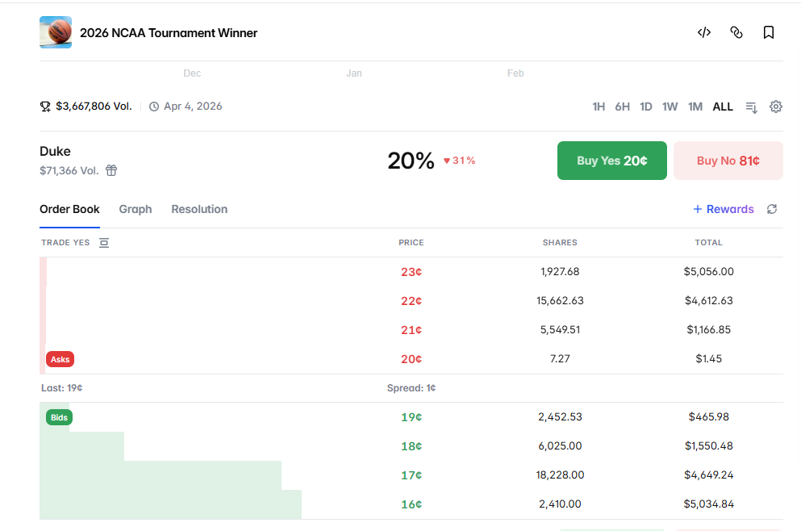

| # | Tên mô hình | User đấu với ai | Độ phức tạp |
|---|---|---|---|
| 1 | Parimutuel Pool | Users vs Users | Thấp |
| 2 | AMM / LMSR | Users vs Pool toán học | Trung bình |
| 3 | CLOB Orderbook | Users vs Users (khớp lệnh) | Rất cao |
| 4 | Platform làm nhà cái (House Bet) | Users vs Protocol Pool | Trung bình |
| Mô hình | Dễ build | UX người dùng | An toàn cho platform | Bảo mật | Tổng |
|---|---|---|---|---|---|
| 1. Parimutuel | ★★★★★ | ★★☆☆☆ | ★★★★★ | ★★★★★ | 4.3 / 5 |
| 2. AMM/LMSR | ★★★☆☆ | ★★★★☆ | ★★★☆☆ | ★★★★☆ | 3.5 / 5 |
| 3. CLOB Orderbook | ★☆☆☆☆ | ★★★★☆ | ★★★★★ | ★★★☆☆ | 3.3 / 5 |
| 4. House betting | ★★★★☆ | ★★★★★ | ★☆☆☆☆ | ★★☆☆☆ | 3.0 / 5 |
Tất cả tiền cược gom vào 1 cái pool chung. Bên thắng chia đều tiền của bên thua.
Bước 1: War mở cửa
Token A (PEPE) ←→ Token B (WOJAK)
Thời gian: 24 giờ
Bước 2: Người dùng đặt cược
└─ Phe PEPE: 600 SOL (từ 200 người)
└─ Phe WOJAK: 400 SOL (từ 150 người)
└─ Tổng nồi: 1,000 SOL
Bước 3: War kết thúc, tính kết quả
Sau 24h: PEPE tăng 45%, WOJAK tăng 22%
→ PEPE THẮNG
Bước 4: Phân chia tiền thưởng
Phí platform 3% = 30 SOL
Nồi còn lại = 970 SOL
→ Chia hết cho phe PEPE theo tỷ lệ đóng góp
User cược 100 SOL vào PEPE (bên thắng):
Tỷ lệ thắng = 970 SOL / 600 SOL = 1.617x
User nhận = 100 × 1.617 = 161.7 SOL
Lợi nhuận = +61.7 SOL (+61.7%)
User cược 100 SOL vào WOJAK (bên thua):
User nhận = 0 SOL
Thua = -100 SOL
Điểm yếu : User không biết cụ thể odd của mình. Số tiền ăn được thay đổi theo thời gian. Ít có incentive vào sớm.
Người dùng cược với một công thức toán tự động (AMM).
| Tham số | Giá trị | Ý nghĩa |
|---|---|---|
| Seed liquidity (b) | 1 SOL | Số SOL platform bơm vào pool để "mồi" thị trường |
| Mệnh giá vé | 1 vé = 0.1 SOL | Mua 1 vé để nhận 0.11 SOL nếu thắng, hoặc 0 nếu thua |
| Giá khởi điểm | PEPE_YES = 0.05 SOL/vé | WOJAK_YES = 0.05 SOL/vé | Hai phe cân bằng 50/50 ban đầu |
| Rule | Giá PEPE_YES + Giá WOJAK_YES = 0.1 SOL luôn luôn | Tổng xác suất = 100% |
Về Seed Seed quyết định độ ổn định của giá. Seed càng lớn → giá càng ít trượt khi có người mua.
Bước 1: Platform tạo 2 loại vé cược
└─ PEPE_YES (mua nếu tin PEPE thắng)
└─ WOJAK_YES (mua nếu tin WOJAK thắng)
Giá mỗi vé khởi điểm: PEPE_YES = 0.05 SOL | WOJAK_YES = 0.05 SOL
(Tổng 2 loại luôn = 0.1 SOL - mệnh giá)
─────────────────────────────────────────────────────
Bước 2: Platform bơm seed
Seed: 1 SOL
─────────────────────────────────────────────────────
Bước 3: Alice mua 5 vé PEPE_YES
Trả: ~0.28 SOL
→ Giá PEPE_YES tăng lên ~0.062 SOL/vé (+24%)
→ Giá WOJAK_YES giảm xuống ~0.038 SOL/vé
─────────────────────────────────────────────────────
Bước 4: Bob mua 5 vé WOJAK_YES
Trả: ~0.22 SOL (rẻ hơn Alice vì WOJAK đang bị undervalue)
→ Giá cân bằng lại dần về 50/50
→ mua WOJAK_YES lúc này được lợi giá
─────────────────────────────────────────────────────
Bước 5: War kết thúc — PEPE thắng
Mỗi vé PEPE_YES → đổi được 0.1 SOL
Mỗi vé WOJAK_YES → = 0 SOL (vô giá trị)
Alice: mua 5 vé PEPE_YES với 0.28 SOL → nhận 0.5 SOL → lời 0.22 SOL
Bob: mua 5 vé WOJAK_YES với 0.22 SOL → nhận 0 SOL → lỗ 0.22 SOL
Creator của token có thể thao túng được thị trường để ăn tiền bet.
Như sàn chứng khoán, giao dịch xảy ra khi 2 người khớp giá với nhau.
Mỗi war tạo ra 2 loại share:
PEPE_WIN share = "tôi tin PEPE thắng"
WOJAK_WIN share = "tôi tin WOJAK thắng"
Quy tắc:
Giá PEPE_WIN + Giá WOJAK_WIN = 1 SOL (luôn luôn)
Ý nghĩa giá:
PEPE_WIN giá 0.65 SOL → thị trường đang tin PEPE thắng 65%
WOJAK_WIN giá 0.35 SOL → thị trường đang tin WOJAK thắng 35%
Khi kết thúc:
Bên thắng → mỗi share = 1 SOL
Bên thua → mỗi share = 0 SOL
Bước 1:
User A: đặt mua với giá 0.65 SOL
User A đặt lệnh MUA:
2 PEPE_WIN shares @ 0.65 SOL/share
→ User A lock: 2 × 0.65 = 1.3 SOL vào pool
→ Lệnh nằm chờ trên orderbook
[Orderbook:]
BID: User A muốn mua 2 PEPE_WIN @ 0.65 SOL ← chờ người bán
ASK: (trống)
────────────────────────────────────────────────────
Bước 2: User B vào xem orderbook, thấy lệnh của User A
[Orderbook lúc này]
BID: User A muốn mua 2 PEPE_WIN @ 0.65 SOL
User B đọc: "User A trả 0.65/share cho PEPE_WIN"
→ User B chấp nhận tỷ lệ này, muốn cược WOJAK
User B đặt lệnh MUA WOJAK_WIN:
2 WOJAK_WIN shares @ 0.35 SOL/share
→ User B lock: 2 × 0.35 = 0.7 SOL vào pool
→ 0.65 + 0.35 = 1.0 ✓ → MATCH!
────────────────────────────────────────────────────
Bước 3: Hệ thống tự động xử lý khi lệnh khớp
User A nạp: 1.3 SOL → nhận 2 PEPE_WIN shares
User B nạp: 0.7 SOL → nhận 2 WOJAK_WIN shares
Tổng pool: 2.0 SOL locked trong contract
────────────────────────────────────────────────────
Bước 4: War kết thúc — PEPE THẮNG
User A (giữ YES/PEPE_WIN):
2 YES × 1 SOL = 2 SOL nhận về
Bỏ vào: 1.3 SOL → Lợi: +0.7 SOL (+54%)
User B (giữ NO/WOJAK_WIN):
2 NO × 0 SOL = 0 SOL nhận về
Net chi phí: 0.7 SOL → Thua: -0.7 SOL
| Alice (tin PEPE) | Bob (tin WOJAK) | |
|---|---|---|
| Bỏ vào | 1.3 SOL | 0.7 SOL |
| Nếu PEPE thắng | +0.7 SOL lời | -0.7 SOL thua |
| Nếu WOJAK thắng | -1.3 SOL thua | +1.3 SOL lời |
| Odds (giá share) | 0.65 SOL | 0.35 SOL |
Quy tắc khớp: PEPE_WIN bid + WOJAK_WIN bid = 1.0 thì MATCH
══════════════════════════════════════════════════════════════
T=1: User A đặt lệnh MUA PEPE_WIN
A đặt: MUA 3 PEPE_WIN @ 0.60 SOL → lock 1.8 SOL
[Orderbook]
PEPE_WIN BID: A @ 0.60 (3 shares)
WOJAK_WIN BID: (trống)
→ Chưa ai đối ứng → chờ
══════════════════════════════════════════════════════════════
T=2: User B đặt lệnh MUA PEPE_WIN, giá cao hơn A
B đặt: MUA 2 PEPE_WIN @ 0.65 SOL → lock 1.3 SOL
[Orderbook — sắp theo giá cao → thấp]
PEPE_WIN BID: B @ 0.65 (2 shares) ← ưu tiên khớp trước
A @ 0.60 (3 shares)
WOJAK_WIN BID: (trống)
→ Vẫn chưa ai đặt WOJAK_WIN → chờ
══════════════════════════════════════════════════════════════
T=3: User C vào, muốn cược WOJAK
C thấy orderbook: lệnh cao nhất là B @ 0.65 cho PEPE_WIN
→ Phía ngược lại: WOJAK_WIN = 1 - 0.65 = 0.35
→ C chấp nhận, đặt: MUA 2 WOJAK_WIN @ 0.35 → lock 0.7 SOL
Kiểm tra: 0.65 (B) + 0.35 (C) = 1.0 ✓ → MATCH với B!
Kết quả:
B: bỏ 1.3 SOL → nhận 2 PEPE_WIN
C: bỏ 0.7 SOL → nhận 2 WOJAK_WIN
[Orderbook sau T=3]
PEPE_WIN BID: A @ 0.60 (3 shares) ← B đã khớp hết
WOJAK_WIN BID: (trống)
══════════════════════════════════════════════════════════════
T=4: User D vào, muốn cược WOJAK nhưng ra giá thấp hơn
D đặt: MUA 5 WOJAK_WIN @ 0.30 → lock 1.5 SOL
Kiểm tra với lệnh tốt nhất hiện tại:
A @ 0.60 + D @ 0.30 = 0.90 ≠ 1.0 ✗ → KHÔNG KHỚP
(Còn thiếu 0.10 SOL để chốt deal)
[Orderbook sau T=4]
PEPE_WIN ASK: B @ 0.72 (2 shares)
PEPE_WIN BID: A @ 0.60 (3 shares)
WOJAK_WIN ASK: C @ 0.45 (2 shares)
WOJAK_WIN BID: D @ 0.30 (5 shares)
══════════════════════════════════════════════════════════════
T=5: User E vào, muốn cược WOJAK, chấp nhận giá hợp lý hơn
E thấy A đang bid 0.60 cho PEPE_WIN
→ E chấp nhận đối ứng: MUA 3 WOJAK_WIN @ 0.40 → lock 1.2 SOL
Kiểm tra: 0.60 (A) + 0.40 (E) = 1.0 ✓ → MATCH với A! (3 shares)
Kết quả:
A: bỏ 1.8 SOL → nhận 3 PEPE_WIN
E: bỏ 1.2 SOL → nhận 3 WOJAK_WIN
[Orderbook sau T=5]
PEPE_WIN ASK: A @ 0.68 (1 share)
B @ 0.72 (2 shares)
PEPE_WIN BID: (trống)
WOJAK_WIN ASK: E @ 0.42 (2 shares)
C @ 0.45 (2 shares)
WOJAK_WIN BID: D @ 0.30 (5 shares)
══════════════════════════════════════════════════════════════
T=6: User F vào — Partial Fill (F nhỏ hơn D)
F muốn cược PEPE mạnh, đặt: MUA 3 PEPE_WIN @ 0.70 → lock 2.1 SOL
Kiểm tra: 0.70 (F) + 0.30 (D) = 1.0 ✓ → có thể MATCH với D
Nhưng: F muốn 3 shares, D còn 5 shares
→ Chỉ khớp được 3 shares (theo số nhỏ hơn) → PARTIAL FILL
Kết quả:
F: bỏ 2.1 SOL → nhận 3 PEPE_WIN (lệnh khớp TOÀN BỘ)
D: bỏ 0.9 SOL → nhận 3 WOJAK_WIN (lệnh khớp 3/5, còn 2 shares chưa khớp)
D được hoàn lại: 1.5 - 0.9 = 0.6 SOL (phần chưa khớp vẫn lock chờ)
[Orderbook sau T=6]
PEPE_WIN ASK: A @ 0.68 (1 share)
B @ 0.72 (2 shares)
F @ 0.78 (2 shares)
PEPE_WIN BID: (trống)
WOJAK_WIN ASK: E @ 0.42 (2 shares)
C @ 0.45 (2 shares)
WOJAK_WIN BID: D @ 0.30 (2 shares còn lại)
══════════════════════════════════════════════════════════════
T=7: Một lệnh lớn khớp với nhiều counterparty liên tiếp
[Tiếp từ T=6 — orderbook: WOJAK_WIN BID: D @ 0.30 (2 shares)]
Y vào: MUA 2 WOJAK_WIN @ 0.40 → lock 0.8 SOL
Z vào: MUA 3 WOJAK_WIN @ 0.40 → lock 1.2 SOL
[Orderbook]
PEPE_WIN ASK: A @ 0.68 (1 share)
B @ 0.72 (2 shares)
F @ 0.78 (2 shares)
PEPE_WIN BID: (trống)
WOJAK_WIN ASK: E @ 0.42 (2 shares)
C @ 0.45 (2 shares)
WOJAK_WIN BID: Y @ 0.40 (2 shares)
Z @ 0.40 (3 shares)
D @ 0.30 (2 shares)
X vào: MUA 8 PEPE_WIN @ 0.60 → lock 4.8 SOL
→ cần đối ứng WOJAK_WIN @ 0.40 → thấy Y(2) + Z(3) = 5 shares đủ điều kiện
→ D @ 0.30 không thỏa (0.60 + 0.30 ≠ 1.0) → bỏ qua
Hệ thống khớp lần lượt: Y trước → hết → Z tiếp
Kết quả:
Y: nhận 2 WOJAK_WIN (fully filled)
Z: nhận 3 WOJAK_WIN (fully filled)
X: nhận 5 PEPE_WIN, còn 3 shares chờ (không còn ai @ 0.40)
[Orderbook sau T=7]
PEPE_WIN ASK: A @ 0.68 (1 share)
B @ 0.72 (2 shares)
F @ 0.78 (2 shares)
PEPE_WIN BID: X @ 0.60 (3 shares còn lại)
WOJAK_WIN ASK: E @ 0.42 (2 shares)
C @ 0.45 (2 shares)
WOJAK_WIN BID: D @ 0.30 (2 shares)
→ X BID 0.60 < ASK thấp nhất 0.68 → không khớp secondary; primary cũng kẹt (D @ 0.30)
══════════════════════════════════════════════════════════════
T=8: Khớp lệnh secondary market
G đặt: MUA 2 PEPE_WIN @ 0.72 → MATCH với ASK rẻ nhất (A @ 0.68? Không — A chỉ có 1, G cần 2)
→ Khớp A @ 0.68 (1 share) trước, còn 1 share → tiếp tục lên B @ 0.72 (1 share)
→ Tổng: G nhận 2 PEPE_WIN, trả 0.68 + 0.72 = 1.40 SOL
[Orderbook sau T=8]
PEPE_WIN ASK: B @ 0.72 (1 share)
F @ 0.78 (2 shares)
PEPE_WIN BID: X @ 0.60 (3 shares)
WOJAK_WIN ASK: E @ 0.42 (2 shares)
C @ 0.45 (2 shares)
WOJAK_WIN BID: D @ 0.30 (2 shares)
══════════════════════════════════════════════════════════════
TỔNG KẾT
Đã khớp:
B(0.65) + C(0.35) = 1.0 → 2 cặp (T=3)
A(0.60) + E(0.40) = 1.0 → 3 cặp (T=5)
F(0.70) + D(0.30) = 1.0 → 3 cặp (T=6, partial — F xong, D còn 2)
X(0.60) + Y(0.40) = 1.0 → 2 cặp (T=7, khớp Y trước)
X(0.60) + Z(0.40) = 1.0 → 3 cặp (T=7, khớp tiếp Z — X còn 3 chưa xong)
A @ 0.68 + B @ 0.72 → G nhận 2 PEPE_WIN (T=8)
Chưa khớp: X BID 0.60 < ASK thấp nhất 0.72 → spread chưa chạm; D BID 0.30 kẹt
Giá giao dịch PEPE_WIN: 0.65 → 0.60 → 0.70 → 0.60 → 0.68 / 0.72
══════════════════════════════════════════════════════════════
SETTLEMENT — War kết thúc, PEPE thắng
Pool (contract) đứng giữa xử lý tất cả:
T=3→T=7 — tạo share:
13 cặp × 1.0 SOL = 13.0 SOL vào pool
Phí 5%: 0.65 SOL → platform
Prize pool còn: 12.35 SOL → 13 shares × 0.95 SOL/share
T=8 — chuyển nhượng share qua pool:
G nạp 1.40 SOL → pool nhận, trừ 5% fee (0.07 SOL)
→ Pool trả A: 0.646 SOL | B: 0.684 SOL
(Prize pool 13.0 SOL không đổi — chỉ đổi chủ share A/B → G)
Trả thưởng PEPE_WIN khi war kết thúc:
B: 1 share → 0.95 SOL
A: 2 share → 1.90 SOL
F: 3 share → 2.85 SOL
X: 5 share → 4.75 SOL
G: 2 share → 1.90 SOL
─────────────────────
12.35 SOL ✓
WOJAK_WIN (C, E, D, Y, Z) → 0 SOL
Hoàn unmatched: X: 1.80 SOL | D: 0.60 SOL
Tổng platform thu: 0.65 + 0.07 = 0.72 SOL

[Orderbook lúc war mới mở — chưa ai đặt]
User X đặt: MUA PEPE_WIN @ 0.60 → chờ ai mua WOJAK_WIN @ 0.40
User Y đặt: MUA WOJAK_WIN @ 0.20 → chờ ai mua PEPE_WIN @ 0.80
Kiểm tra: 0.60 + 0.20 = 0.80 ≠ 1.0 ← gap 0.20, không khớp
War kết thúc sau 24h mà không có lệnh nào khớp → X và Y được hoàn tiền
Cần bot hoặc người Market Maker liên tục đặt lệnh cả 2 phía (vừa mua PEPE_WIN vừa mua WOJAK_WIN) để lúc nào cũng có lệnh chờ sẵn trên orderbook — người dùng vào là khớp được ngay, không phải ngồi chờ.
Bước 1: Platform tự đưa odd:
PEPE: 50% → odds 1.85x
WOJAK: 50% → odds 1.85x
(Odds thấp hơn xác suất thật để platform có margin)
Bước 2: User A đặt cược
User A cược 100 SOL vào WOJAK @ odds 2.1x
Bước 3: Odds tự điều chỉnh
WOJAK được nhiều người cược → odds giảm xuống 1.8x
(Nhà cái tự bảo vệ bằng cách giảm hấp dẫn của phía đang được cược nhiều)
Bước 4: Kết quả
WOJAK thắng → Alice nhận 210 SOL từ pool
PEPE thắng → 100 SOL của Alice ở lại pool (LP được chia)
Platform
*House betting nếu áp dụng cho kèo ngoài platform thì sẽ an toàn hơn. AMM nếu để creator tạo seed thì cộng thêm 1★ An toàn.
| Mô hình | Điểm yếu |
|---|---|
| CLOB Orderbook | Quá phức tạp, không có MM cho meme coin → orderbook trống |
| AMM/LMSR | LP chịu rủi ro, bị exploit bởi insider meme coin |
| House betting | Rủi ro nhất |
Cải tiến thêm — Time-Tranche:
Cược sớm (0-8h đầu) → nhân hệ số 1.2x Pool Shares ← khuyến khích vào sớm
Cược bình thường → hệ số 1.0x
Cược muộn (2h cuối) → nhân hệ số 0.8x Pool Shares ← hạn chế whale last-minute
Ghi chú: Có thể xem xét kết hợp AMM nếu để creator tạo seed — tặng thêm 1 điểm an toàn cho AMM/LMSR.